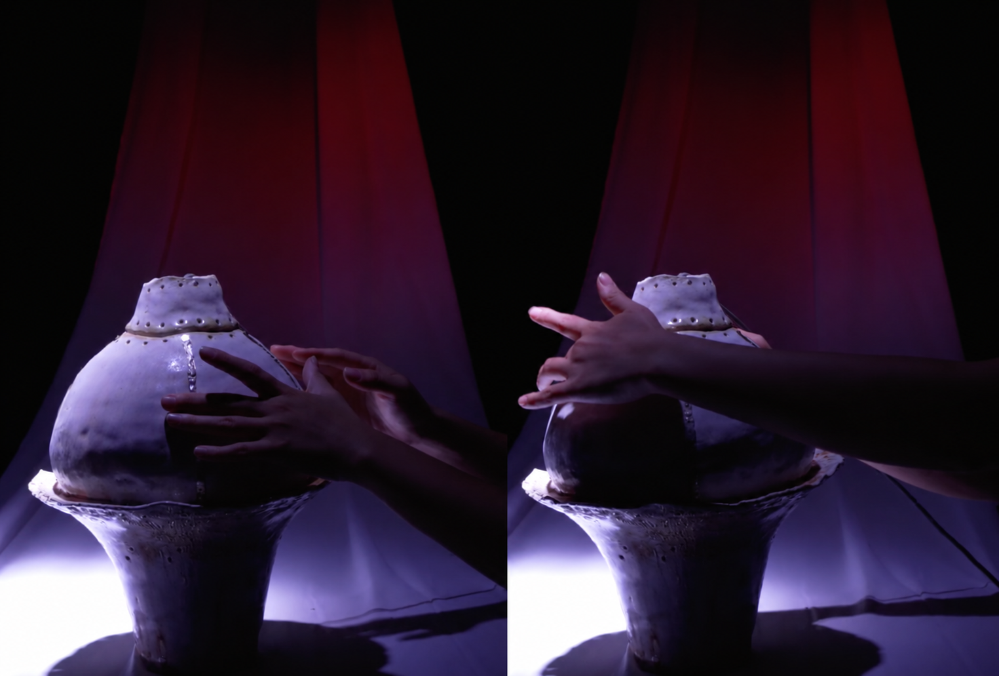
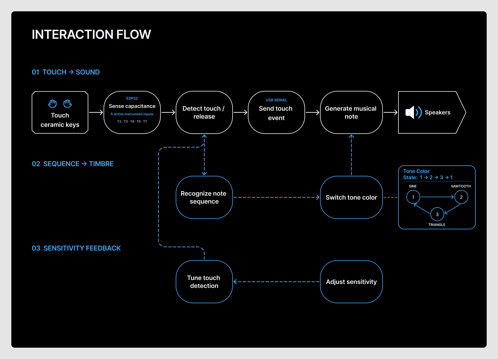

Tactone
Investigating ceramic form as an interface for bodily exploration and electronic sound.
Overview
Tactone is a ceramic vessel that functions as a touch-based electronic instrument. Five copper contacts on its surface each trigger a synthesized note, and a specific sequence of touches changes the waveform. Visitors learn how it works by playing it. The project asks how the physical form of an electronic instrument shapes the gestures people use to discover and play it.
Context
Tactone draws on two traditions of making sound through touch. The handpan, a dish-shaped instrument played with the hands, produces resonant tones when its surface is struck and tapped. Ceramic makers likewise tap the walls of a vessel to shape its texture and tone. In both, the player learns the object by touching it and listening to the response.
I wanted to extend this relationship with electronic sound, using a handmade vessel as the interface and designing it so that several people could play together.
Form and Construction
The vessel was coil-built by hand, then glazed and fired. Coiling allowed me to control the form gradually and gave the surface a tactile quality suited to repeated touch. Five copper-tape contacts are applied to the glazed surface and soldered to the touch pins of an ESP32 housed inside the vessel. The ceramic provides structure and an insulating surface, and the copper defines the points of contact. Because each note has a fixed position, playing a melody requires the hand to move around the vessel, so the arrangement of contacts directly shapes the gesture.

Interaction and Sound
The five contacts correspond to five notes. A designated touch sequence (do, re, mi, fa, sol) changes the synthesized waveform between sine, sawtooth, and triangle. Visitors first associate each location with a pitch. They then discover that the order of their touches can alter the sound, which allows a second layer of the instrument to emerge through use.

Next Steps
Tactone is currently a working touch-to-sound prototype that detects the duration of each touch. The next iteration will respond to the strength of touch and return it as haptic feedback. I plan to replace the microcontroller’s built-in touch inputs with a dedicated capacitive sensing board and to add a small actuator coupled to the clay. A later stage would move the electrodes from copper tape to a custom flexible circuit fitted inside the vessel wall. I also plan to test alternative vessel forms and contact arrangements to see how they change the way people approach and play the instrument.